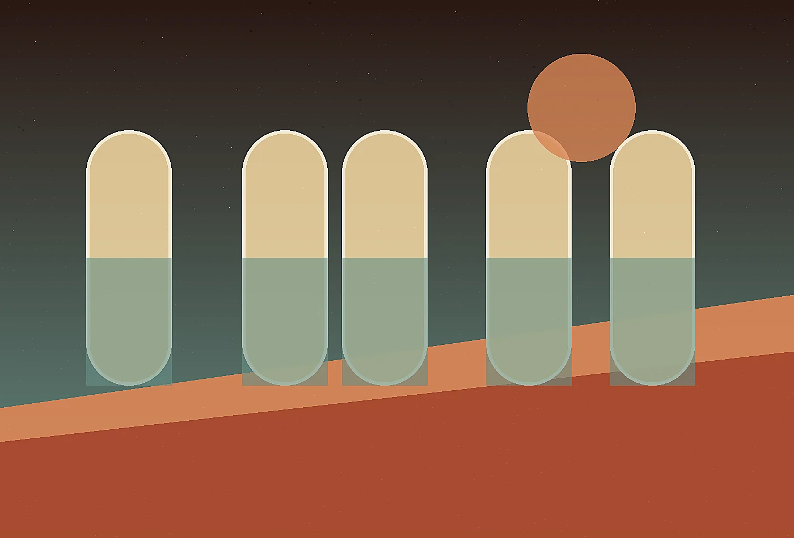
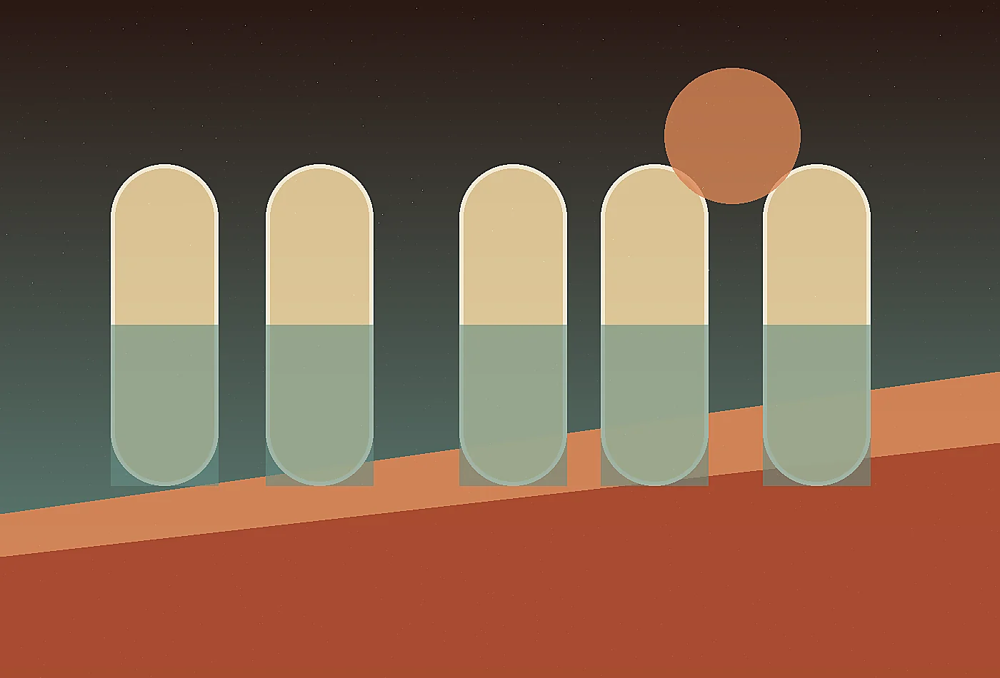

We prefer precise improvements that can be maintained over sweeping gestures that age into clutter.

Desert futurist hospitality atelier
About at Mirage Loom
Mirage Loom Retreats was formed for leaders who believe atmosphere and operations should inform one another. Our about page explains the thinking, standards, and working habits behind desert hospitality woven from silence, shade, and ceremony.
Design the arrivalOrigin with a point of view
Mirage Loom Retreats exists because polished projects often fail at the exact moment people have to use them. We built a practice around close observation, strong writing, material awareness, and operating details. The studio is intentionally small, so senior attention stays inside the work from first conversation to final handoff. We measure success by whether teams feel clearer, guests feel considered, and the system still works after the launch photographs are forgotten.
Principles we keep visible
Visual direction, service scripts, and daily workflows are designed as one connected experience.
We listen to staff, place, weather, constraints, budgets, and users before prescribing a form.

How a project moves
Discovery is compact and immersive. Strategy is written clearly. Prototypes appear early. Feedback is sorted by usefulness, not volume. The final package includes the visible design language and the backstage instructions needed to keep it alive. Clients never receive an ornamental deck without a path to action.
Senior team, light footprint
Our collaborators include designers, writers, operations specialists, researchers, and production-minded advisors. Every team is assembled for the assignment, which keeps the process personal and the recommendations honest. We do not overstaff, oversell, or hide junior guesswork behind presentation polish.
- Research direction
- Experience strategy
- Editorial systems
- Operational prototyping
What clients remember
Clients often tell us the work made their decisions quieter. That is the compliment we value most. Quiet decisions are not timid; they are informed, legible, and easier to explain. Whether the project is physical, culinary, hospitality-led, or intelligence-driven, our standard is the same: make the important things easier to notice and easier to maintain.
Our documents are tactile and operational at the same time. They may describe the feeling of a threshold, the timing of a tea service, the sourcing logic for a blanket, and the maintenance implication of a shaded path on the same page. That blend helps owners protect the emotional promise while making grounded decisions.
We pay close attention to maintenance because remote beauty can become fragile when daily work is ignored. The same concept system that describes guest emotion also names storage needs, cleaning rhythms, replacement materials, staff language, and seasonal adjustments, giving the retreat a better chance to remain graceful under real use.